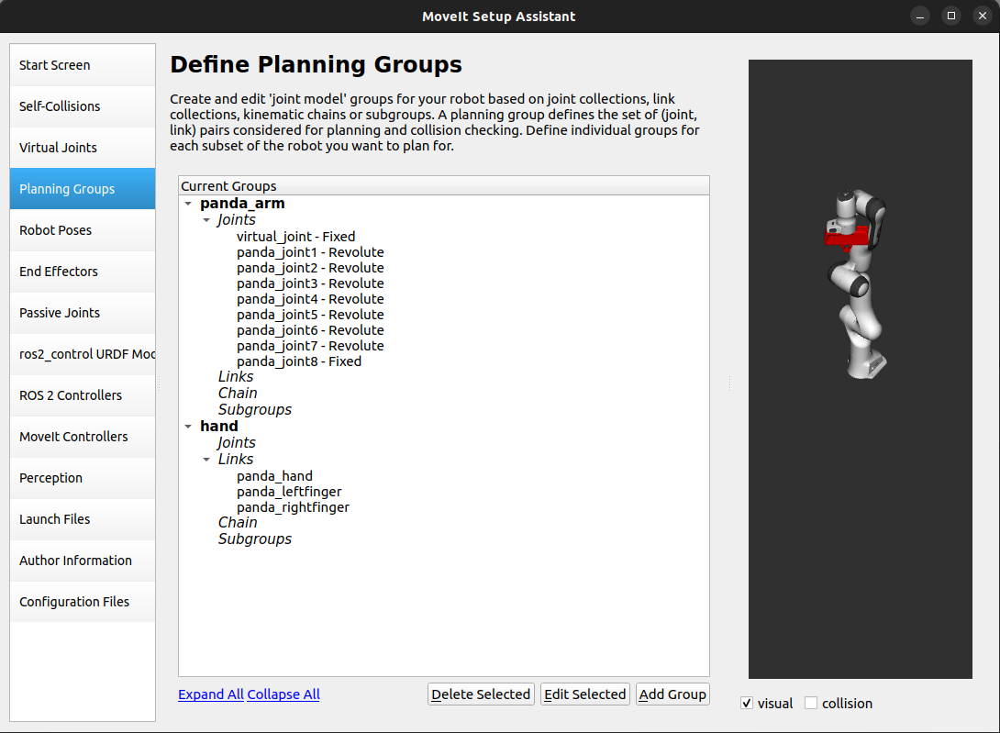
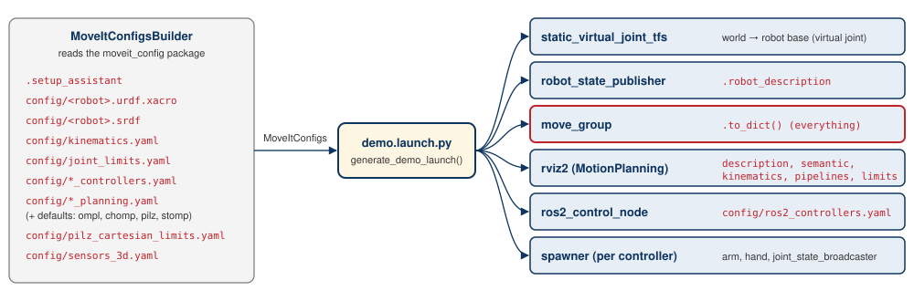

layout: true <div class="header"><img src="../../../common/logo/ros_industrial_logo.png" alt="ROS-Industrial" style="background-color:transparent"/></div> <div class="footer"><img src="https://www.ipa.fraunhofer.de/content/dam/ipa/ipa.svg" /><p>© Fraunhofer IPA</p></div> <div class="triangle"></div> --- class: center, middle name: main_title # MOVEIT 2 – CONFIGURATION AND LAUNCH ### Setup Assistant, the config package and `MoveItConfigsBuilder` Example: `dual_fr3_cell_moveit_config` (two Franka FR3 arms with hands) --- class: dense ## MoveIt Setup Assistant .cols[ .fifty[ <p></p> `ros2 launch moveit_setup_assistant setup_assistant.launch.py` ] .fifty[ 1. **Start**: load the URDF/xacro, or an existing config package to edit it 2. **Self-collisions**: samples random states → `disable_collisions` pairs in the SRDF 3. **Virtual joints**: fix the robot base to `world` 4. **Planning groups**: chains, joints, links or subgroups 5. **Robot poses**: named states (`ready`, `open`, `close`) 6. **End effectors**: the hand group attached to an arm tip 7. **Passive joints**: joints MoveIt cannot actuate 8. **ros2_control URDF modification**: command/state interfaces 9. **ROS 2 controllers / MoveIt controllers** 10. **Perception**: `sensors_3d.yaml` 11. **Launch files**, author information, **generate** .note[Choices are saved in `.setup_assistant`. Rerun with `ros2 launch <robot>_moveit_config setup_assistant.launch.py`.<br/> The assistant does **not** tune planners or IK: edit the YAML files for that.] ] ] --- class: dense ## The config package ```text dual_fr3_cell_moveit_config/ ├── .setup_assistant # where the URDF and SRDF come from (read by MoveItConfigsBuilder) ├── config/ │ ├── dual_fr3_cell.urdf.xacro # "modified URDF": robot URDF + ros2_control tags │ ├── dual_fr3_cell.ros2_control.xacro │ ├── initial_positions.yaml # start joint values for mock hardware │ ├── dual_fr3_cell.srdf # groups, named poses, end effectors, collision pairs to skip │ ├── kinematics.yaml # IK solver per group │ ├── joint_limits.yaml # velocity / acceleration limits, default scaling │ ├── pilz_cartesian_limits.yaml # Cartesian limits for Pilz LIN / CIRC │ ├── moveit_controllers.yaml # controllers MoveIt sends trajectories to │ ├── ros2_controllers.yaml # controllers ros2_control runs │ ├── sensors_3d.yaml # optional: Octomap sensors │ ├── *_planning.yaml # optional: planner tuning (else built-in defaults) │ └── moveit.rviz ├── launch/ # demo, move_group, moveit_rviz, rsp, spawn_controllers, ... ├── CMakeLists.txt └── package.xml ``` - Generated once by the Setup Assistant, then **edited by hand** (it is a normal ROS 2 package: keep it in git) - No `*_planning.yaml` here: OMPL, CHOMP, Pilz and STOMP defaults come from `moveit_configs_utils` --- class: dense, small-code ## SRDF: the semantic description .cols[ .sixty[ ```xml <robot name="dual_fr3_cell"> <group name="left_arm"> <chain base_link="left_base" tip_link="left_fr3_hand_tcp"/> </group> <group name="left_hand"> <link name="left_fr3_hand"/> <link name="left_fr3_leftfinger"/> <link name="left_fr3_rightfinger"/> </group> <group name="both_arms"> <chain base_link="left_base" tip_link="left_fr3_hand_tcp"/> <chain base_link="right_base" tip_link="right_fr3_hand_tcp"/> </group> <group_state name="ready" group="left_arm"> <joint name="left_fr3_joint1" value="0.0"/> <joint name="left_fr3_joint2" value="-0.785"/> <!-- joint3 ... joint7 --> </group_state> <end_effector name="left_hand" parent_link="left_fr3_hand_tcp" group="left_hand" parent_group="left_arm"/> <disable_collisions link1="left_fr3_hand" link2="left_fr3_leftfinger" reason="Adjacent"/> <!-- 110 pairs: Adjacent, Never, Default --> </robot> ``` ] .forty[ - **group**: what you plan for - a chain (base → tip), joints, links or subgroups - `both_arms` plans both arms at once (coordinated motion) - **group_state**: named poses, e.g. `setNamedTarget("ready")` - **end_effector**: attaches the hand group to the arm tip (RViz, MTC grasping) - **disable_collisions**: link pairs that never or always collide → the default **ACM**, faster collision checks - **virtual_joint**: fixes the robot to `world` (not needed when the URDF already contains it) ] ] --- class: dense, small-code ## IK solvers and joint limits .cols[ .fifty[ ```yaml # config/kinematics.yaml left_arm: kinematics_solver: kdl_kinematics_plugin/KDLKinematicsPlugin kinematics_solver_search_resolution: 0.005 kinematics_solver_timeout: 0.005 right_arm: kinematics_solver: kdl_kinematics_plugin/KDLKinematicsPlugin kinematics_solver_search_resolution: 0.005 kinematics_solver_timeout: 0.005 ``` - One solver per **chain group** - `both_arms` has no solver: MoveIt uses the solvers of its two subgroups - 5 ms per attempt is short for a 7-DoF arm: raise it, or switch to `pick_ik` (deck 4) ] .fifty[ ```yaml # config/joint_limits.yaml default_velocity_scaling_factor: 0.1 default_acceleration_scaling_factor: 0.1 joint_limits: left_fr3_joint1: has_velocity_limits: true max_velocity: 2.62 has_acceleration_limits: true max_acceleration: 3.75 left_fr3_joint2: # ... ``` - The URDF has no acceleration limits: they are **required** for time parameterization - Default scaling 0.1 = 10 % of the maximum speed, which is why demos move slowly - Loaded as `robot_description_planning` ] ] --- class: dense, small-code ## Two controller files .cols[ .fifty[ ```yaml # config/moveit_controllers.yaml (MoveIt side) moveit_controller_manager: moveit_simple_controller_manager/MoveItSimpleControllerManager moveit_simple_controller_manager: controller_names: - left_arm_controller - left_hand_controller # right_arm_controller, right_hand_controller left_arm_controller: type: FollowJointTrajectory action_ns: follow_joint_trajectory default: true joints: - left_fr3_joint1 # ... left_fr3_joint7 left_hand_controller: type: GripperCommand action_ns: gripper_cmd default: true joints: - left_fr3_finger_joint1 ``` ] .fifty[ ```yaml # config/ros2_controllers.yaml (ros2_control side) controller_manager: ros__parameters: update_rate: 100 # Hz left_arm_controller: type: joint_trajectory_controller/JointTrajectoryController left_hand_controller: type: position_controllers/GripperActionController joint_state_broadcaster: type: joint_state_broadcaster/JointStateBroadcaster left_arm_controller: ros__parameters: joints: - left_fr3_joint1 # ... left_fr3_joint7 command_interfaces: [position] state_interfaces: [position, velocity] ``` ] ] - MoveIt calls the action `/<controller name>/<action_ns>`, e.g. `/left_arm_controller/follow_joint_trajectory`: **names must match** - `MoveItConfigsBuilder` loads only the MoveIt file: with several `*_controllers.yaml`, it prefers `moveit_controllers.yaml` --- ## Generated launch files <p></p> .note[Each generated file is two lines: build the configs, then call a helper from `moveit_configs_utils.launches`: `move_group.launch.py`, `moveit_rviz.launch.py`, `rsp.launch.py`, `spawn_controllers.launch.py`, `static_virtual_joint_tfs.launch.py`, `setup_assistant.launch.py`.<br/> `demo.launch.py` combines them all with **mock hardware**: use it to try the config, then write your own launch file.] --- class: dense, small-code ## MoveItConfigsBuilder: config package → ROS parameters .cols[ .fifty[ ```python from moveit_configs_utils import MoveItConfigsBuilder from moveit_configs_utils.launches import generate_move_group_launch def generate_launch_description(): moveit_config = MoveItConfigsBuilder( "dual_fr3_cell", package_name="dual_fr3_cell_moveit_config", ).to_moveit_configs() return generate_move_group_launch(moveit_config) ``` - ROS 2 has no global parameter server: **every node** needs the URDF, SRDF, kinematics, ... as parameters - The builder finds the files, runs xacro, loads the YAML files, and returns one dict per section - `to_moveit_configs()` loads every section you did not set, with its defaults **URDF lookup:** `config/<robot>.urdf.xacro` → `urdf` entry of `.setup_assistant` → `config/<robot>.urdf` ] .fifty[ | Method | Default file → parameter | |--------|--------------------------| | `robot_description()` | URDF (xacro) → `robot_description` | | `robot_description_semantic()` | SRDF → `robot_description_semantic` | | `robot_description_kinematics()` | `kinematics.yaml` → `robot_description_kinematics` | | `joint_limits()` | `joint_limits.yaml` → `robot_description_planning` | | `planning_pipelines()` | `*_planning.yaml` + defaults; OMPL is the default pipeline | | `trajectory_execution()` | `*_controllers.yaml` | | `planning_scene_monitor()` | flags, e.g. `publish_robot_description_semantic` | | `sensors_3d()` | `sensors_3d.yaml`, if present | | `pilz_cartesian_limits()` | loaded when Pilz is a pipeline | | `moveit_cpp()` | for MoveItPy; **not** loaded by default | ] ] --- class: dense, small-code ## Beyond demo.launch.py: robot, move_group and clients .cols[ .fifty[ `demo.launch.py` starts everything in one launch. On a real cell, split it like the workshop setup: 1. **Robot bringup**, one per robot (`*_bringup`): `robot_state_publisher`, `ros2_control_node`, controllers. Mock or real hardware, **no MoveIt** 2. **move_group**: generic, the same for every robot. The URDF comes from the `/robot_description` topic of the bringup, the rest from the MoveIt config package 3. **Clients**: your application nodes (MoveGroupInterface, MoveItPy, MTC) Docker: one bringup container per robot repository, one `move_group_server` container that mounts the robot's **descriptions image** (description + MoveIt config + `robot.env`), one container per example. ] .fifty[ ```python # move_group_server/launch/move_group.launch.py config = MoveItConfigsBuilder( os.environ["MOVEIT_ROBOT_NAME"], package_name=os.environ["MOVEIT_CONFIG_PACKAGE"], ).to_moveit_configs() parameters = config.to_dict() # single source of the URDF: the bringup parameters.pop("robot_description") Node(package="moveit_ros_move_group", executable="move_group", parameters=[parameters, { "publish_robot_description_semantic": True, "capabilities": "move_group/ExecuteTaskSolutionCapability", }]) ``` - Overrides before `to_moveit_configs()`: `.planning_pipelines(pipelines=[...])`, `.robot_description_semantic(mappings={...})`, ... - Mappings with launch substitutions are evaluated **at launch time** ] ] .note[The SRDF must match the URDF of the bringup: e.g. a tool changer added with a xacro argument needs its collision pairs in the SRDF too.]